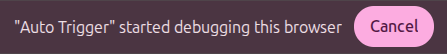

Click Pattern
No clicks recorded
Auto Trigger
Macro
times
s
⚠ Caution
When running Auto Trigger or Macro, Chrome shows the banner below. Do not click Cancel — it is required for clicks to work correctly.

If the URL changes during recording, the page will automatically refresh and the recording will be reset.
Clicking the trash icon will also refresh the page and clear all recorded clicks.